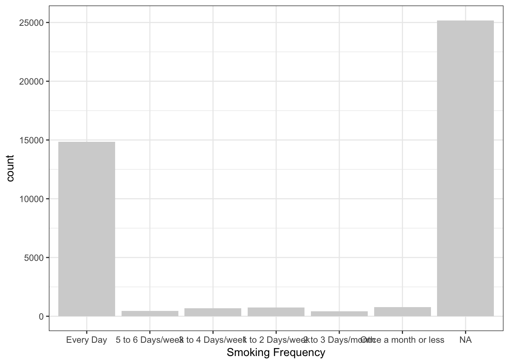
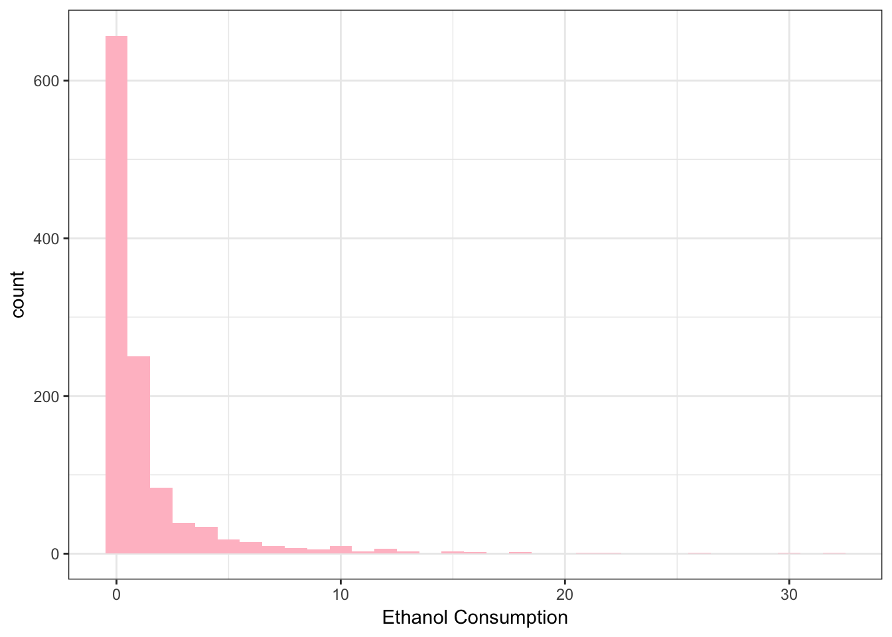
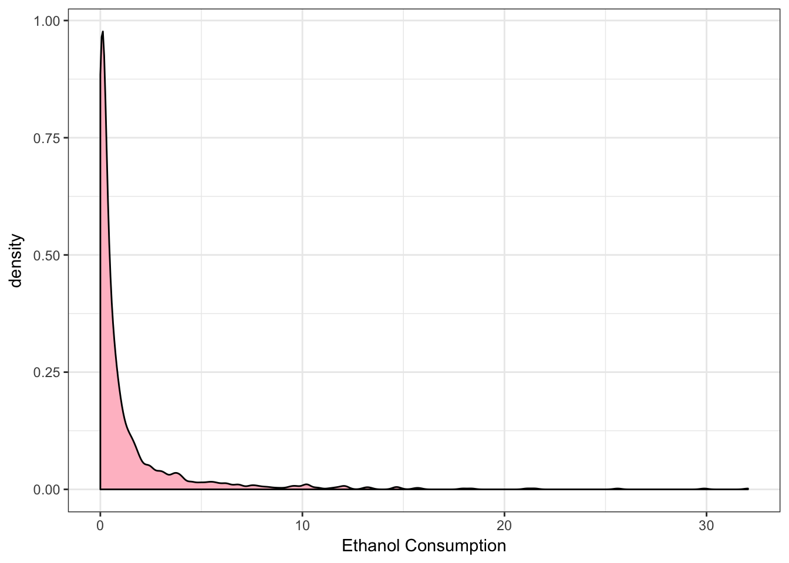
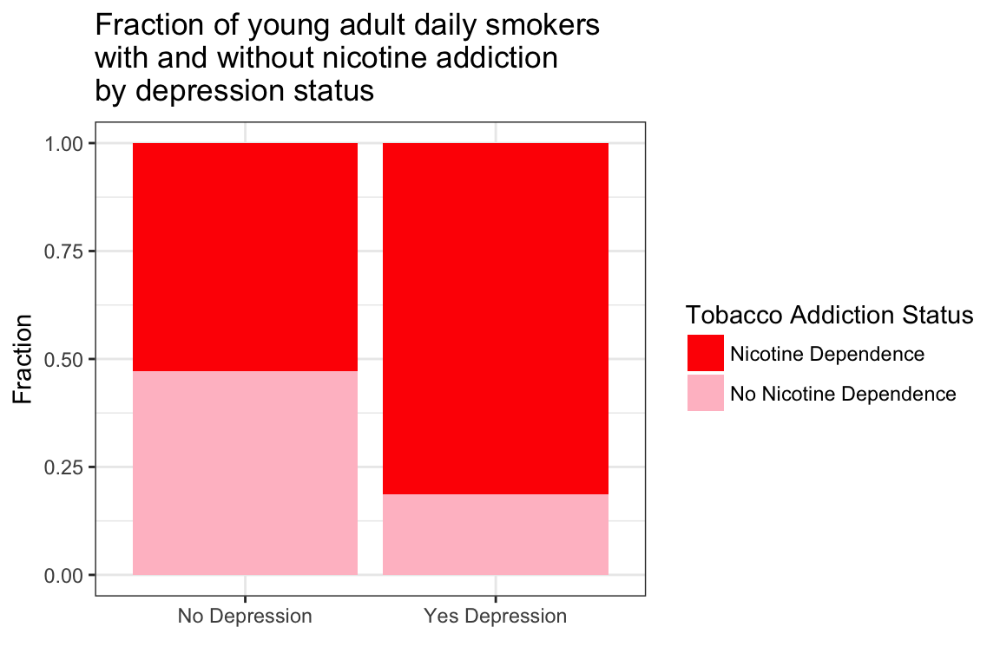
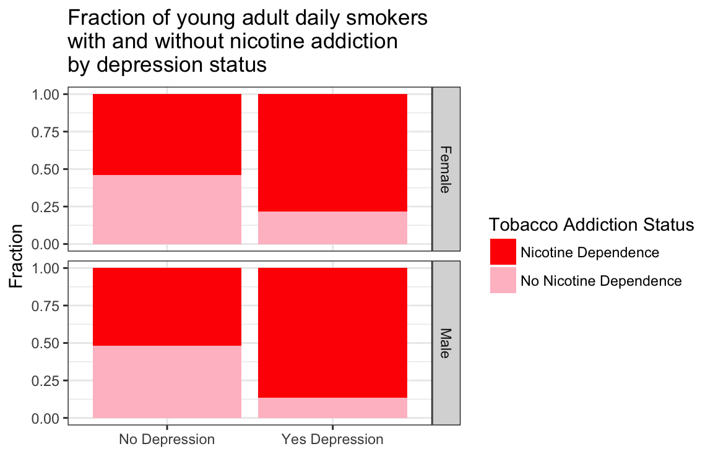

Passion Driven Statistics
Alan T. Arnholt
2016-10-13
Using PDS
Once the PDS package is installed, you will need to load the package using the library function.
> library(PDS)If you need directions for installing the PDS package, see https://github.com/alanarnholt/PDS. Code Books for AddHealth, gapminder, marscrater, and NESARC are in the CodeBooks folder of the installed PDS package. To see where your system has installed the PDS package, type the following at the R prompt:
> system.file(package = "PDS")The Code Books are stored as PDFs. Note: To find a word/variable in a PDF use shift F with Windows or command F with OSX. Type the desired word/variable inside the box and press enter/return.
Once the PDS package is attached with the library() function, one may access the data in one of the data frames by typing the name of the data frame at the R prompt. For example, to see the first five values in the variable incomeperperson from the gapminder data frame enter
> gapminder[1:5, 'incomeperperson'] # Show first five rows for incomeperperson[1] NA 1914.997 2231.993 21943.340 1381.004> gapminder[1:5, 1:4] # Show the first five rows for variables 1 through 4 country incomeperperson alcconsumption armedforcesrate
1 Afghanistan NA 0.03 0.5696534
2 Albania 1914.997 7.29 1.0247361
3 Algeria 2231.993 0.69 2.3068170
4 Andorra 21943.340 10.17 NA
5 Angola 1381.004 5.57 1.4613288Data Management Using the dplyr Package
The package dplyr must first be installed before it can be used. There are two ways one can install the package. The easiest way to install dplyr is to type
> install.packages("dplyr")at the R prompt. If you want the latest version of dplyr, you can install the development version from GitHub provided you have the required tools to build R packages installed on your machine (Rtools for Windows users, XCode for Mac users, etc.).
> if (packageVersion("devtools") < 1.6) {
+ install.packages("devtools")
+ }
> devtools::install_github("hadley/lazyeval")
> devtools::install_github("hadley/dplyr")Subsetting Your Data
Create a subset of people 25 years old or younger who smoked in the last 12 months. To do this, one can use the dplyr package. Note that CHECK321 == 1 is used to see if a subject has smoked in the past 12 months and !is.na() is used to make sure the subset does not contain NAs for the chosen variables.
> library(dplyr)
> nesarc <- tbl_df(NESARC) %>%
+ filter(!is.na(CHECK321) & !is.na(AGE) & CHECK321 ==1 & AGE <= 25)
> dim(nesarc)[1] 1706 3008The nesarc data frame contains 3008 variables.
Three different approaches to subsetting data will be given. The first approach is to use the dplyr function filter; the second approach is to use indices; and the third approach is to use the function subset. Consider creating a subset of the NESARC data set where a person indicates
- He/she has smoked over 100 cigarettes (
S3AQ1A == 1) - He/she has smoked in the past year (
CHECK321 == 1) - He/she has typically smoked every day over the last year (
S3AQ3B1 == 1) - He/she is less than or equal to 25 years old (
AGE <= 25)
The first approach uses the filter function with the %>% function. Although it is not a requirement, the data frame NESARC is converted to a data frame tbl per the advice given in the dplyr vignette.
> NESARCsub1 <- tbl_df(NESARC) %>%
+ filter(S3AQ1A == 1 & CHECK321 == 1 & S3AQ3B1 == 1 & AGE <= 25)
> dim(NESARCsub1)[1] 1320 3008The second approach uses standard indexing.
> NESARCsub2 <- NESARC[NESARC$S3AQ1A == 1 & NESARC$CHECK321 == 1 &
+ NESARC$S3AQ3B1 == 1 & NESARC$AGE <= 25, ]
> dim(NESARCsub2)[1] 1320 3008The third approach uses the subset function.
> NESARCsub3 <- subset(NESARC, subset = S3AQ1A == 1 & CHECK321 == 1 &
+ S3AQ3B1 == 1 & AGE <= 25)
> dim(NESARCsub3)[1] 1320 3008Use the verb select from the dplyr package to select the variables CHECK321, AGE (age of subject), TAB12MDX (tobacco dependence past 12 months), S3AQ3B1 (usual smoking quantity), ETHRACE2A (ethnicity), SEX (gender), MAJORDEPLIFE (Dysthymia-Lifetime), and S3AQ3C1 (usual smoking frequency).
Renaming Variables
Renaming the variables IDNUM, ETOTLCA2, ETHRACE2A, S3AQ3B1, AGE, MAJORDEPLIFE, DYSLIFE, TAB12MDX, and S3AQ3C1 to UniqueID, EthanolConsumption, Ethnicity, SmokingFrequency, Age, MajorDepression, DysthymiaLifetime, TobaccoDependence, and DailyCigsSmoked respectively, is done with the rename function. Although it is not a requirement, the data frame NESARC is converted to a data frame tbl per the advice given in the dplyr vignette. The rename function takes a data frame or data frame tbl as its first argument while the syntax new_name = old_name is used as the second argument.
> NESARC[1:5, 1:5] # Show first 5 rows and first 5 columns of NESARC IDNUM ETOTLCA2 ETHRACE2A PSU STRATUM
1 1 NA 5 4007 403
2 2 0.0014 5 6045 604
3 3 NA 5 12042 1218
4 4 NA 5 17099 1704
5 5 NA 2 17099 1704> NESARCtbl <- tbl_df(NESARC) %>%
+ rename(UniqueID = IDNUM, EthanolConsumption = ETOTLCA2, Ethnicity = ETHRACE2A,
+ SmokingFrequency = S3AQ3B1, Age = AGE, MajorDepression = MAJORDEPLIFE, Sex = SEX,
+ DysthymiaLifetime = DYSLIFE, TobaccoDependence = TAB12MDX, DailyCigsSmoked = S3AQ3C1) %>%
+ select(UniqueID, EthanolConsumption, Ethnicity, SmokingFrequency, Age, MajorDepression,
+ DysthymiaLifetime, TobaccoDependence, DailyCigsSmoked, S3AQ1A, CHECK321,
+ SmokingFrequency, Sex)
> NESARCtbl# A tibble: 43,093 × 12
UniqueID EthanolConsumption Ethnicity SmokingFrequency Age
<fctr> <dbl> <fctr> <fctr> <dbl>
1 1 NA 5 NA 23
2 2 0.0014 5 NA 28
3 3 NA 5 NA 81
4 4 NA 5 NA 18
5 5 NA 2 NA 36
6 6 0.0021 2 NA 34
7 7 0.0033 2 NA 19
8 8 0.0271 1 NA 84
9 9 0.0295 1 NA 29
10 10 0.1565 5 NA 18
# ... with 43,083 more rows, and 7 more variables: MajorDepression <fctr>,
# DysthymiaLifetime <fctr>, TobaccoDependence <fctr>,
# DailyCigsSmoked <dbl>, S3AQ1A <fctr>, CHECK321 <fctr>, Sex <fctr>Coding Missing Values
Note that the variable S3AQ3B1 renamed to SmokingFrequency uses a 9 to record unknown for smoking frequency.
> NESARCtbl$SmokingFrequency[NESARCtbl$SmokingFrequency == 9] <- NA
> summary(NESARCtbl$SmokingFrequency) # Note that 9 still appears 1 2 3 4 5 6 9 NA's
14836 460 687 747 409 772 0 25182 > NESARCtbl$SmokingFrequency <- factor(NESARCtbl$SmokingFrequency)[, drop = TRUE]
> summary(NESARCtbl$SmokingFrequency) # Unused level no longer appears 1 2 3 4 5 6 NA's
14836 460 687 747 409 772 25182 One of the great things about the R language is how it handles a wide variety of data types.
In this case, the variable SmokingFrequency is a factor with numeric labels for the levels of the factor.
To change the numeric labels to text type the following:
> NESARCtbl$SmokingFrequency <- factor(NESARCtbl$SmokingFrequency,
+ labels = c("Every Day", "5 to 6 Days/week",
+ "3 to 4 Days/week", "1 to 2 Days/week",
+ "2 to 3 Days/month", "Once a month or less"))
> summary(NESARCtbl$SmokingFrequency) Every Day 5 to 6 Days/week 3 to 4 Days/week
14836 460 687
1 to 2 Days/week 2 to 3 Days/month Once a month or less
747 409 772
NA's
25182 > xtabs(~SmokingFrequency, data = NESARCtbl) # Note how the NA's are not printedSmokingFrequency
Every Day 5 to 6 Days/week 3 to 4 Days/week
14836 460 687
1 to 2 Days/week 2 to 3 Days/month Once a month or less
747 409 772 The following ggplot2 code is used to graph the values in SmokingFrequency.
> library(ggplot2)
> ggplot(data = NESARCtbl, aes(x = SmokingFrequency)) +
+ geom_bar(fill = "lightgray") +
+ labs(x = "Smoking Frequency") +
+ theme_bw() 
If you do not want to see the NA’s or have the labels on the \(x\)- axis overlap, use
> ggplot(data = na.omit(NESARCtbl[ , "SmokingFrequency", drop = FALSE]), aes(x = SmokingFrequency)) +
+ geom_bar(fill = "lightgray") +
+ labs(x = "Smoking Frequency") +
+ theme_bw() +
+ theme(axis.text.x = element_text(angle = 55, hjust = 1.0)) 
Collapsing Categories
Consider the variable S1Q6A which has 14 levels that record the highest level of education of the participant. To collapse the categories into a dichotomous variable that indicates the presence of a high school degree, use the ifelse function. The levels 1, 2, 3, 4, 5, 6, and 7 of the variable S1Q6A correspond to education levels less than completing high school.
> NESARC$HS_DEGREE <- factor(ifelse(NESARC$S1Q6A %in% c("1", "2", "3", "4", "5", "6", "7"),
+ "No", "Yes"))
> summary(NESARC$HS_DEGREE) No Yes
7849 35244 Creating a Factor from a Numeric Vector
To create a factor with three levels (young adults, adults, older adults) using the variable AGE (a numeric vector) use the function cut.
> NESARC$AGEfac <- cut(NESARC$AGE, breaks = c(18, 30, 50, Inf),
+ labels = c("Young Adult", "Adult", "Older Adult"),
+ include.lowest = TRUE)
> summary(NESARC$AGEfac)Young Adult Adult Older Adult
9535 17260 16298 Consider collapsing the numeric vector S3AQ3C1 (usual quantity when cigarettes are smoked) into a categorical variable with 5 levels.
> NESARC$S3AQ3C1fac <- cut(NESARC$S3AQ3C1, breaks = c(0, 5, 10, 15, 20, 100),
+ include.lowest = TRUE)
> summary(NESARC$S3AQ3C1fac) [0,5] (5,10] (10,15] (15,20] (20,100] NA's
4384 4157 1163 5492 2817 25080 Aggregating Variables using ifelse
Consider creating a new variable DepressLife which is Yes if the variable MAJORLIFE or DYSLIFE is a 1.
> NESARC$DepressLife <- factor(ifelse( (NESARC$MAJORDEPLIFE == 1 | NESARC$DYSLIFE == 1), "Yes", "No"))
> summary(NESARC$DepressLife) No Yes
34894 8199 As another example, consider creating a variable PPpanic for past and present panic disorders. The variables APANDX12 and APANDXP12 record a panic disorder within the last 12 months and prior to the last 12 months, respectively, with agoraphobia. The variables PANDX12 and PANDXP12 record a panic disorder within the last 12 months and prior to the last 12 months, respectively, without agoraphobia.
> NESARC$PPpanic <- factor(ifelse( (NESARC$APANDX12 == 1 | NESARC$APANDXP12 == 1 |
+ NESARC$PANDX12 == 1 | NESARC$PANDXP12 == 1 ), "Yes", "No"))
> summary(NESARC$PPpanic) No Yes
40799 2294 Consider a new variable AllDeprSymp that records whether a subject exhibits all depression symptoms or not. There are 19 depression symptoms recorded in the variables S4AQ4A1 - S4AQ4A19. Note that the logical operator & is used to test if all depression symptoms are present.
> NESARC$AllDeprSymp <- factor(ifelse( (NESARC$S4AQ4A1 == 1 & NESARC$S4AQ4A2 == 1 &
+ NESARC$S4AQ4A3 == 1 & NESARC$S4AQ4A4 == 1 &
+ NESARC$S4AQ4A5 == 1 & NESARC$S4AQ4A6 == 1 &
+ NESARC$S4AQ4A7 == 1 & NESARC$S4AQ4A8 == 1 &
+ NESARC$S4AQ4A9 == 1 & NESARC$S4AQ4A10 == 1 &
+ NESARC$S4AQ4A11 == 1 & NESARC$S4AQ4A12 == 1 &
+ NESARC$S4AQ4A13 == 1 & NESARC$S4AQ4A14 == 1 &
+ NESARC$S4AQ4A15 == 1 & NESARC$S4AQ4A16 == 1 &
+ NESARC$S4AQ4A17 == 1 & NESARC$S4AQ4A18 == 1 &
+ NESARC$S4AQ4A19 == 1), "Yes", "No"))
> summary(NESARC$AllDeprSymp) No Yes NA's
13738 15 29340 Creating a Composite Factor
The following code selects the 19 variables that deal with depression using the select function from dplyr. The variable nDS counts the number of depression symptoms a subject displays.
> mysum <- function(x){sum(x == 1)}
> myadd <- function(x){apply(x, 1, mysum)}
> ndf <- NESARC %>%
+ select(contains("S4AQ4A"))
> nDS <- myadd(ndf)
> ndf <- cbind(ndf, nDS)
> xtabs(~nDS, data = ndf) nDS
0 1 2 3 4 5 6 7 8 9 10 11 12 13 14
1125 716 840 874 997 1032 1056 1043 970 981 940 824 737 586 413
15 16 17 18 19
295 181 97 31 15 Creating a New Variable with mutate
> MINI <- tbl_df(NESARC) %>%
+ select(S1Q24FT, S1Q24IN, S1Q24LB, SEX) %>%
+ filter(S1Q24FT < 99, S1Q24IN < 99, S1Q24LB < 999) %>%
+ mutate(Inches = (S1Q24FT*12 + S1Q24IN),
+ Sex = factor(SEX, labels = c("Male", "Female"))) %>%
+ rename(Weight = S1Q24LB)
> MINI# A tibble: 41,654 × 6
S1Q24FT S1Q24IN Weight SEX Inches Sex
<dbl> <dbl> <dbl> <fctr> <dbl> <fctr>
1 5 7 195 1 67 Male
2 5 1 127 2 61 Female
3 5 4 185 2 64 Female
4 5 7 180 1 67 Male
5 6 1 220 1 73 Male
6 5 5 140 2 65 Female
7 5 9 160 1 69 Male
8 5 4 120 2 64 Female
9 5 4 140 2 64 Female
10 5 10 150 2 70 Female
# ... with 41,644 more rowsConvert a factor to numeric
Be careful when converting a factor to a vector of numeric values based on the factor labels. One may be tempted to use as.numeric to convert a factor to a numeric vector. However, using as.numeric(my_factor) returns a numeric vector of the index levels, not the actual values.
To estimate the total number of cigarettes a subject smokes per month, convert S3AQ3B1 renamed to SmokingFrequency in NESARCtbl (a factor with 6 levels) to a numeric variable using as.numeric. DaysSmoke estimates the days per month a subject smokes. The variable TotalCigsSmoked estimates the number of cigarettes a subject smokes per month by multiplying DaysSmoke times DailyCigsSmoked (S3AQ3C1). The numeric variable TotalCigsSmoked is converted into a factor with roughly equivalent numbers stored in each level of the factor CigsSmokedFac using the cut function.
> summary(NESARCtbl$SmokingFrequency) Every Day 5 to 6 Days/week 3 to 4 Days/week
14836 460 687
1 to 2 Days/week 2 to 3 Days/month Once a month or less
747 409 772
NA's
25182 > levels(NESARCtbl$SmokingFrequency)[1] "Every Day" "5 to 6 Days/week" "3 to 4 Days/week"
[4] "1 to 2 Days/week" "2 to 3 Days/month" "Once a month or less"> table(as.numeric(NESARCtbl$SmokingFrequency))
1 2 3 4 5 6
14836 460 687 747 409 772 > NESARCtbl$DaysSmoke <- as.numeric(NESARCtbl$SmokingFrequency)
> NESARCtbl$DaysSmoke[NESARCtbl$DaysSmoke == 1] <- 30
> NESARCtbl$DaysSmoke[NESARCtbl$DaysSmoke == 2] <- 4*5.5
> NESARCtbl$DaysSmoke[NESARCtbl$DaysSmoke == 3] <- 4*3.5
> NESARCtbl$DaysSmoke[NESARCtbl$DaysSmoke == 4] <- 4*1.5
> NESARCtbl$DaysSmoke[NESARCtbl$DaysSmoke == 5] <- 2.5
> NESARCtbl$DaysSmoke[NESARCtbl$DaysSmoke == 6] <- 1
> # Using dplyr again
> NESARCtbl <- NESARCtbl %>%
+ mutate(TotalCigsSmoked = DaysSmoke*DailyCigsSmoked)
> proportions <- quantile(NESARCtbl$TotalCigsSmoked, na.rm = TRUE)
> proportions 0% 25% 50% 75% 100%
1 150 420 600 2970 > NESARCtbl$CigsSmokedFac <- cut(NESARCtbl$TotalCigsSmoked, breaks = proportions,
+ include.lowest = TRUE)
> NESARCtbl# A tibble: 43,093 × 15
UniqueID EthanolConsumption Ethnicity SmokingFrequency Age
<fctr> <dbl> <fctr> <fctr> <dbl>
1 1 NA 5 NA 23
2 2 0.0014 5 NA 28
3 3 NA 5 NA 81
4 4 NA 5 NA 18
5 5 NA 2 NA 36
6 6 0.0021 2 NA 34
7 7 0.0033 2 NA 19
8 8 0.0271 1 NA 84
9 9 0.0295 1 NA 29
10 10 0.1565 5 NA 18
# ... with 43,083 more rows, and 10 more variables:
# MajorDepression <fctr>, DysthymiaLifetime <fctr>,
# TobaccoDependence <fctr>, DailyCigsSmoked <dbl>, S3AQ1A <fctr>,
# CHECK321 <fctr>, Sex <fctr>, DaysSmoke <dbl>, TotalCigsSmoked <dbl>,
# CigsSmokedFac <fctr>Subsetting Again
> NESARCtbl <- NESARCtbl %>%
+ filter(S3AQ1A == 1 & CHECK321 == 1 & SmokingFrequency == "Every Day" & Age <= 25)
> dim(NESARCtbl)[1] 1320 15> str(NESARCtbl)Classes ‘tbl_df’, ‘tbl’ and 'data.frame': 1320 obs. of 15 variables:
$ UniqueID : Factor w/ 43093 levels "1","2","3","4",..: 21 103 122 136 150 155 174 178 184 210 ...
$ EthanolConsumption: num 0.0099 0.985 0.8888 0.017 0.0266 ...
$ Ethnicity : Factor w/ 5 levels "1","2","3","4",..: 2 1 1 1 1 2 1 5 1 2 ...
$ SmokingFrequency : Factor w/ 6 levels "Every Day","5 to 6 Days/week",..: 1 1 1 1 1 1 1 1 1 1 ...
$ Age : num 25 24 23 21 23 21 19 19 19 24 ...
$ MajorDepression : Factor w/ 2 levels "0","1": 1 2 2 1 2 1 1 1 1 2 ...
$ DysthymiaLifetime : Factor w/ 2 levels "0","1": 1 1 1 1 1 1 1 1 1 2 ...
$ TobaccoDependence : Factor w/ 2 levels "0","1": 2 2 2 1 1 2 1 1 1 1 ...
$ DailyCigsSmoked : num 3 10 10 20 5 8 1 10 20 3 ...
$ S3AQ1A : Factor w/ 3 levels "1","2","9": 1 1 1 1 1 1 1 1 1 1 ...
$ CHECK321 : Factor w/ 3 levels "1","2","9": 1 1 1 1 1 1 1 1 1 1 ...
$ Sex : Factor w/ 2 levels "1","2": 2 2 2 1 2 2 1 2 2 2 ...
$ DaysSmoke : num 30 30 30 30 30 30 30 30 30 30 ...
$ TotalCigsSmoked : num 90 300 300 600 150 240 30 300 600 90 ...
$ CigsSmokedFac : Factor w/ 4 levels "[1,150]","(150,420]",..: 1 2 2 3 1 2 1 2 3 1 ...> summary(NESARCtbl) UniqueID EthanolConsumption Ethnicity SmokingFrequency
21 : 1 Min. : 0.0011 1:849 Every Day :1320
103 : 1 1st Qu.: 0.0561 2:170 5 to 6 Days/week : 0
122 : 1 Median : 0.3251 3: 30 3 to 4 Days/week : 0
136 : 1 Mean : 1.3485 4: 47 1 to 2 Days/week : 0
150 : 1 3rd Qu.: 1.1996 5:224 2 to 3 Days/month : 0
155 : 1 Max. :32.0533 Once a month or less: 0
(Other):1314 NA's :167
Age MajorDepression DysthymiaLifetime TobaccoDependence
Min. :18.00 0:965 0:1234 0:521
1st Qu.:20.00 1:355 1: 86 1:799
Median :22.00
Mean :21.61
3rd Qu.:24.00
Max. :25.00
DailyCigsSmoked S3AQ1A CHECK321 Sex DaysSmoke TotalCigsSmoked
Min. : 1.00 1:1320 1:1320 1:646 Min. :30 Min. : 30.0
1st Qu.: 7.00 2: 0 2: 0 2:674 1st Qu.:30 1st Qu.: 210.0
Median :10.00 9: 0 9: 0 Median :30 Median : 300.0
Mean :13.69 Mean :30 Mean : 410.7
3rd Qu.:20.00 3rd Qu.:30 3rd Qu.: 600.0
Max. :99.00 Max. :30 Max. :2970.0
CigsSmokedFac
[1,150] :249
(150,420] :514
(420,600] :465
(600,2.97e+03]: 92
Exploratory Graphs
Numeric data \(\rightarrow\) histogram and density plots.
> library(ggplot2)
> ggplot(data = NESARCtbl, aes(x = EthanolConsumption) ) +
+ geom_histogram(binwidth = 1, fill = "pink") +
+ theme_bw() +
+ labs(x = "Ethanol Consumption")
> ggplot(data = NESARCtbl, aes(x = EthanolConsumption) ) +
+ geom_density(fill = "pink") +
+ theme_bw() +
+ labs(x = "Ethanol Consumption")
Categorical data \(\rightarrow\) bar graphs.
> ggplot(data = NESARCtbl, aes(x = Ethnicity)) +
+ geom_bar(fill = c("snow", "brown4", "red", "yellow", "tan"), color = "black") +
+ theme_bw() We should provide more descriptive labels for the factors Ethnicity, MajorDepression, DysthymiaLifetime, and TobaccoDependence.
Changing Levels and Labeling Variables
> NESARCtbl$TobaccoDependence <- factor(NESARCtbl$TobaccoDependence,
+ labels = c("No Nicotine Dependence", "Nicotine Dependence"))
> xtabs(~TobaccoDependence, data = NESARCtbl)TobaccoDependence
No Nicotine Dependence Nicotine Dependence
521 799 > NESARCtbl$TobaccoDependence <- factor(NESARCtbl$TobaccoDependence,
+ levels = c("Nicotine Dependence", "No Nicotine Dependence"))
> xtabs(~TobaccoDependence, data = NESARCtbl)TobaccoDependence
Nicotine Dependence No Nicotine Dependence
799 521 > NESARCtbl$Ethnicity <- factor(NESARCtbl$Ethnicity,
+ labels = c("Caucasian", "African American",
+ "Native American", "Asian", "Hispanic"))
> NESARCtbl$Sex <- factor(NESARCtbl$Sex, labels = c("Male", "Female"))
> table(NESARCtbl$Sex)
Male Female
646 674 > NESARCtbl$Sex <- factor(NESARCtbl$Sex, levels = c("Female", "Male"))
> table(NESARCtbl$Sex)
Female Male
674 646 > NESARCtbl$SmokingFrequency <- factor(NESARCtbl$SmokingFrequency,
+ levels = c("Once a month or less", "2 to 3 Days/month", "1 to 2 Days/week",
+ "3 to 4 Days/week", "5 to 6 Days/week", "Every Day"))
> NESARCtbl$MajorDepression <- factor(NESARCtbl$MajorDepression,
+ labels = c("No Depression", "Yes Depression"))
> ggplot(data = NESARCtbl, aes(x = Ethnicity)) +
+ geom_bar(fill = c("snow", "brown4", "red", "yellow", "tan"), color = "black") +
+ theme_bw() +
+ theme(axis.text.x = element_text(angle = 55, hjust = 1)) +
+ labs(x = "")> T1 <- xtabs(~ TobaccoDependence + MajorDepression, data = NESARCtbl)
> T1 MajorDepression
TobaccoDependence No Depression Yes Depression
Nicotine Dependence 510 289
No Nicotine Dependence 455 66> ggplot(data = NESARCtbl, aes(x = MajorDepression, fill = TobaccoDependence)) +
+ geom_bar() +
+ theme_bw()
> T2 <- prop.table(T1, 2)
> T2 MajorDepression
TobaccoDependence No Depression Yes Depression
Nicotine Dependence 0.5284974 0.8140845
No Nicotine Dependence 0.4715026 0.1859155> ggplot(data = NESARCtbl, aes(x = MajorDepression, fill = TobaccoDependence)) +
+ geom_bar(position = "fill") +
+ labs(x = "", y = "Fraction",
+ title = "Fraction of young adult daily smokers\nwith and without nicotine addiction\nby depression status") +
+ theme_bw() +
+ scale_fill_manual(values = c("red", "pink"), name = "Tobacco Addiction Status")
> ###
> ggplot(data = NESARCtbl, aes(x = MajorDepression, fill = TobaccoDependence)) +
+ geom_bar(position = "fill") +
+ labs(x = "", y = "Fraction",
+ title = "Fraction of young adult daily smokers\nwith and without nicotine addiction\nby depression status") +
+ theme_bw() +
+ scale_fill_manual(values = c("red", "pink"), name = "Tobacco Addiction Status") +
+ facet_grid(Sex ~ .)
> ggplot(data = NESARCtbl, aes(x = MajorDepression, fill = TobaccoDependence)) +
+ geom_bar(position = "fill") +
+ labs(x = "", y = "Fraction",
+ title = "Fraction of young adult daily smokers\nwith and without nicotine addiction\nby depression status") +
+ theme_bw() +
+ scale_fill_manual(values = c("red", "pink"), name = "Tobacco Addiction Status") +
+ facet_grid(Ethnicity ~ Sex) +
+ theme(axis.text.x = element_text(angle = 45, hjust = 1))Merging Data Sets
To merge AddHealth Wave I with addhealth_public4 Wave IV one can use the left_join() function from dplyr. The left_join function returns all rows from the first argument (data frame), and all columns from both the first and second arguments (both data frames). To use left_join, one needs a common variable in both data frames. Note: Although the code book for Wave IV uses upper case for variable names, the variable names in the data frame addhealth_public4 are all lower case.
> library(dplyr)
> AddHealthW4 <- tbl_df(addhealth_public4) %>%
+ rename(AID = aid)
> AddHealthW1and4 <- left_join(AddHealthW4, AddHealth)
> dim(AddHealthW1and4)[1] 6504 3804kable
| EthanolConsumption | Sex | MajorDepression |
|---|---|---|
| 1.9585 | Male | No Depression |
| 0.7749 | Female | Yes Depression |
| 0.0444 | Male | Yes Depression |
| 0.0217 | Female | Yes Depression |
| 1.1189 | Male | No Depression |
| 4.4192 | Male | Yes Depression |
| Ethanol Consuption | Gender | Depression |
|---|---|---|
| 1.9585 | Male | No Depression |
| 0.7749 | Female | Yes Depression |
| 0.0444 | Male | Yes Depression |
| 0.0217 | Female | Yes Depression |
| 1.1189 | Male | No Depression |
| 4.4192 | Male | Yes Depression |
pander
| EthanolConsumption | Sex | MajorDepression |
|---|---|---|
| 1.9585 | Male | No Depression |
| 0.7749 | Female | Yes Depression |
| 0.0444 | Male | Yes Depression |
| 0.0217 | Female | Yes Depression |
| 1.1189 | Male | No Depression |
| 4.4192 | Male | Yes Depression |